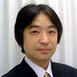
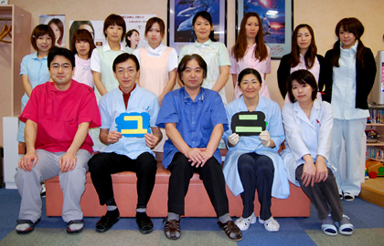

指定自立支援医療機関（育成医療・更生医療） 顎口腔機能診断医療機関

今まで約27年間、矯正治療に携わってきました。従来の治療に加え、北海道で唯一、コーンビームCTという顎顔面に特化したCTを導入し、さらに三次元的診断や外科矯正のシュミレーションをより正確に行うためのソフトウェアの開発をしております。最近ではその関係の講演以来が増えてまいりました。
趣味は、映画鑑賞、旅行、ワインですが、最近メタボと飲み過ぎに注意をしています(^_^;)
略歴
- 昭和58年 北海道大学歯学部 卒業
- 同年 北海道大学歯学部矯正科 入局
- 昭和60年 北海道大学歯学部 助手
- 昭和64年 札幌市西区琴似にてユニ矯正歯科クリニック開業
- 北海道大学にて歯学博士号取得
- 日本矯正歯科学会専門医
- 北海道矯正歯科学会役員（監事）
- 日本口蓋裂学会会員
- Roth & Willium Study Club会員
こんにちは。当ホームページで紹介した治療例は、わかりやすくするために簡単な治療概要がわかるように心がけております。もしもわかりにくい点がございましたらお気軽にご質問ください。お答えさせて頂くとともに、よりわかりやすいものとするためにページの内容を再考させていただきます。よろしく願いします。
略歴
- 平成 2年 岩手医科大学歯学部 卒業
- 同年 北海道大学歯学部矯正科 入局
- 平成 8年 ユニ矯正歯科クリニックに勤務
- 平成13年 共同経営にて診療にあたる
- 日本矯正歯科学会認定医
- 北海道矯正歯科学会会員
- 日本口蓋裂学会会員

阿部 ふじ恵
2児のママのママさん矯正医。穏和な人柄でいつも笑顔(^^)。周りを暖かくしてくれます。当クリニックではみんなのお母さん的存在です。趣味は読書だそうで、息子さんの愛読書「炎の錬金術師」にはまっているとのこと
塚本 祐理
週に2回勤務しています。北大の矯正科所属です。趣味は旅行。
高橋先生
週に2回勤務しています。北大の矯正科所属です。
柴田先生
2週に1回勤務しています。北大の矯正科所属です。独身。